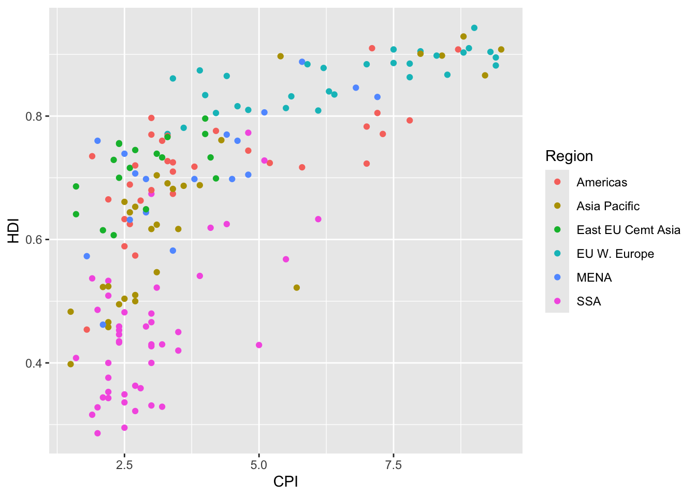
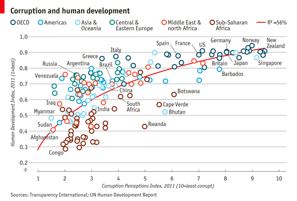
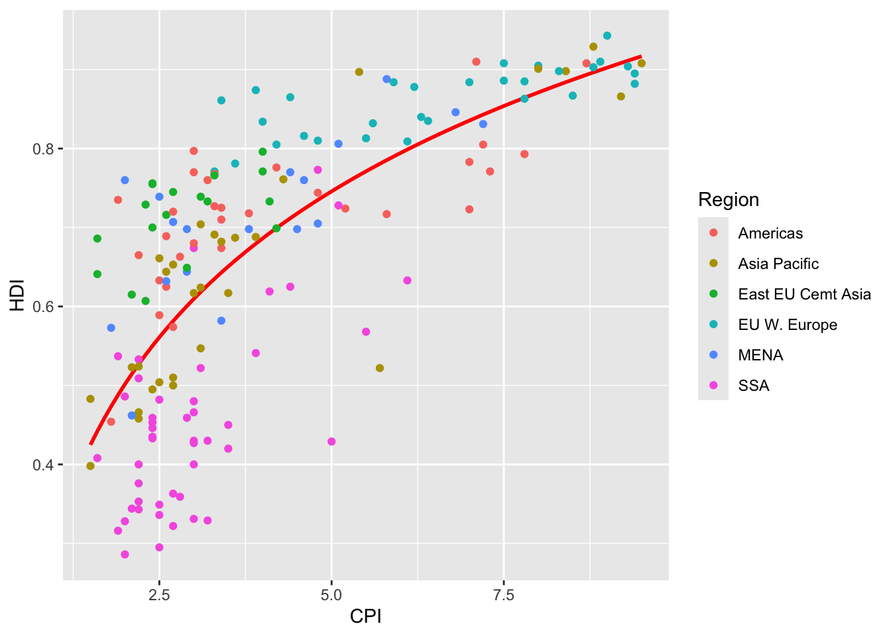
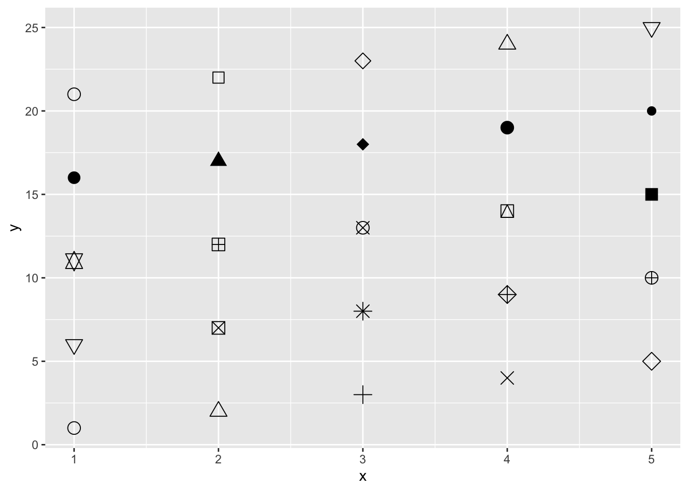
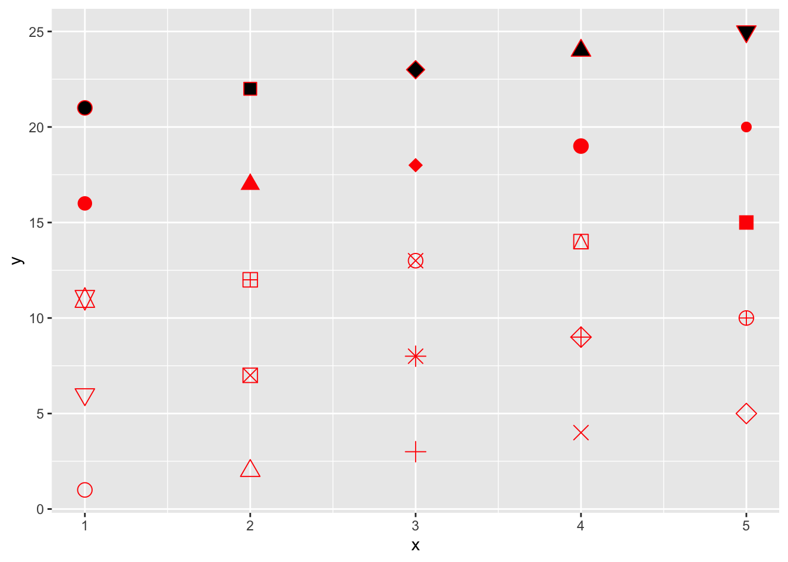
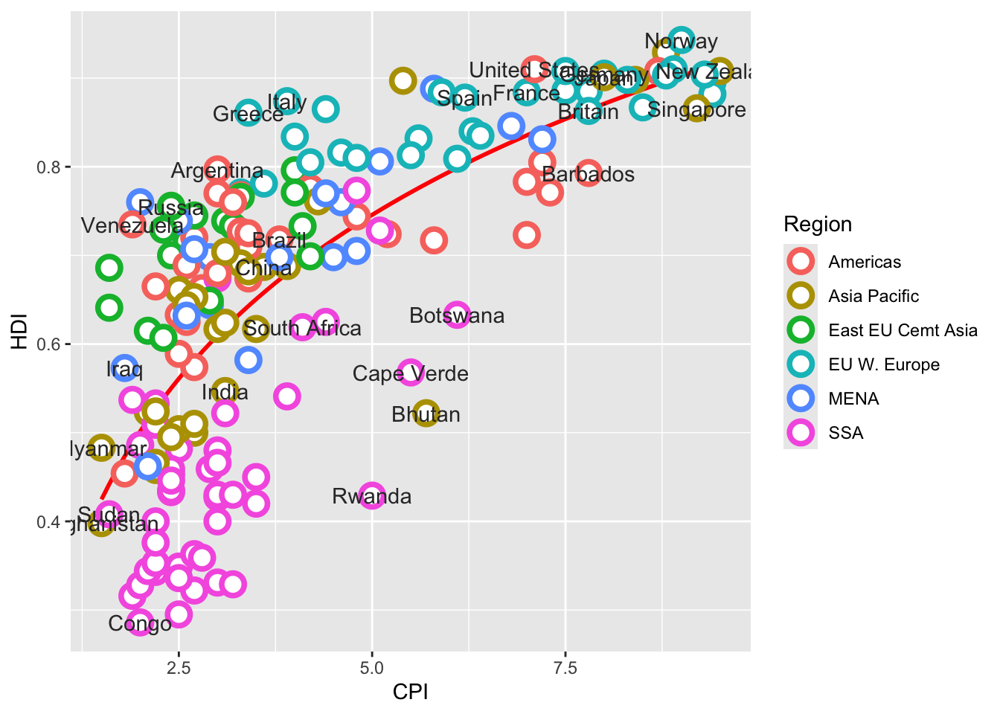
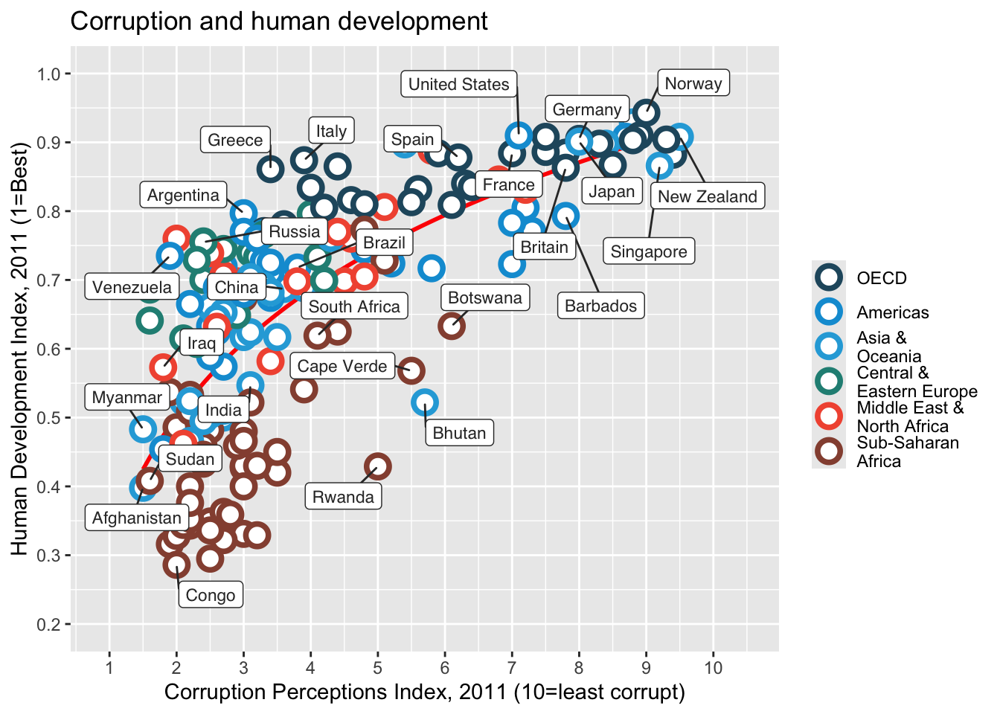
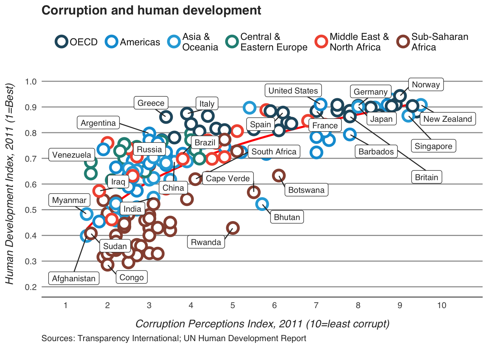
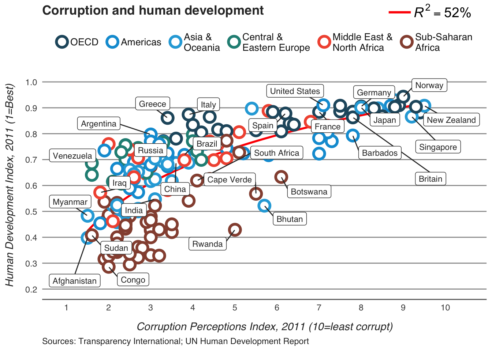

Code
economist_data <- read.csv("../files/EconomistData.csv")
pc1 <- ggplot(economist_data, aes(x = CPI, y = HDI, color = Region))
pc1 + geom_point()
Extended by Michael Hallquist
Harvard University Data Science Services
March 26, 2026
This document was initially developed by Harvard University Data Science Services in 2016. I (Michael Hallquist) have since amended and simplified it substantially to reflect more recent innovations in ggplot2 and cowplot. I have also added a few further graphical refinements.
The goal of this walkthrough is to reproduce this graphic from the Economist using ggplot2.

Graph source: http://www.economist.com/node/21541178
The target graphic from The Economist can be described in terms of its idiomatic features:
Let’s start by creating the basic scatter plot, then we can make a list of things that need to be added or changed. The basic plot looks like this:

To complete this graph we need to:
Adding the trend line is not too difficult, though we need to guess at the model being displayed on the graph. A little bit of trial and error leads to a log-linear model: log(corruption) predicts human development.
Use geom_smooth with the lm (regression) method and a formula that specifies the loglinear relationship: y ~ log(x).

Notice that we put the stat_smooth() layer first so that it will be plotted underneath the points, as was done on the original graph. This highlights that ggplot layers are always drawn from bottom to top such that layers added later in the syntax are plotted on top of earlier layers.
To change the shapes displayed for each data point, we need to find a circle shape that mirrors the one on the original plot. We know that we can change the shape with the shape argument, but what value do we set shape to? The example shown in ?shape can help us:


This shows us that shape 1 is an open circle, so
That is better, but the size of the line around the points is much narrower than on the original. We can change the thickness of the circles using the stroke argument to geom_point(). In addition, if we want to have circles that are filled with white, as in the Economist plot, we should use shape = 21, which is a filled dot. Shapes 19-25 allow for both color (of the perimeter of the mark) and fill (of the interior of the mark) attributes.
This one is tricky in a couple of ways. First, there is no data attribute (variable) that separates points that should be labelled from points that should not be. So the first step is to identify those points (by eye). Second, we need to add text onto the plot near, but not overlapping with, the corresponding circle.
pointsToLabel <- c(
"Russia", "Venezuela", "Iraq", "Myanmar", "Sudan",
"Afghanistan", "Congo", "Greece", "Argentina", "Brazil",
"India", "Italy", "China", "South Africa", "Spain",
"Botswana", "Cape Verde", "Bhutan", "Rwanda", "France",
"United States", "Germany", "Britain", "Barbados", "Norway", "Japan",
"New Zealand", "Singapore"
)We can label these points using geom_text, like this:

This more or less gets the information across, but the labels overlap in a most unpleasing fashion. We can use the ggrepel package to make things better, but if you want perfection you will probably have to do some hand-adjustment.
There are just a couple more things we need to add, and then all that will be left are theme changes.
Comparing our graph to the original we notice that the labels and order of the Regions in the color legend differ. To correct this we need to change both the labels and order of the Region variable. We can do this with the factor function.
economist_data <- economist_data %>%
mutate(Region = factor(
Region,
levels = c(
"EU W. Europe",
"Americas",
"Asia Pacific",
"East EU Cemt Asia",
"MENA",
"SSA"
),
labels = c(
"OECD",
"Americas",
"Asia &\nOceania",
"Central &\nEastern Europe",
"Middle East &\nNorth Africa",
"Sub-Saharan\nAfrica"
)
))Now when we construct the plot using these data the order should appear as it does in the original.
Two things to notice:
Region variable in the original economist_data data.frame, we need to set the data in the plot object again to refresh the dataset.The next step is to add the title and format the axes. We do that using the scales system in ggplot2.
Here is the color palette the Economist seems to be using:
pc5 <- pc4 +
scale_x_continuous(
name = "Corruption Perceptions Index, 2011 (10=least corrupt)",
limits = c(.9, 10.5),
breaks = 1:10
) +
scale_y_continuous(
name = "Human Development Index, 2011 (1=Best)",
limits = c(0.2, 1.0),
breaks = seq(0.2, 1.0, by = 0.1)
) +
scale_color_manual(name = "", values = economist_palette) +
ggtitle("Corruption and human development")
plot(pc5)
Our graph is almost there. To finish up, we need to adjust some of the theme elements and label the axes and legends. This part usually involves some trial and error as you figure out where things need to be positioned. To see what these various theme settings do you can change them and observe the results.
pc6 <- pc5 +
labs(caption = "Sources: Transparency International; UN Human Development Report") +
theme_minimal() +
guides(color = guide_legend(nrow = 1)) +
theme(
text = element_text(family = "sans", color = "gray20"),
legend.position = "top",
legend.direction = "horizontal",
legend.justification = 0.1,
legend.text = element_text(size = 10, color = "gray10", margin = margin(t = 4, b = 4)),
axis.title.x = element_text(margin = margin(t = 10), face = "italic"),
axis.title.y = element_text(margin = margin(r = 10), face = "italic"),
axis.ticks.y = element_blank(),
axis.line = element_line(color = "gray40", linewidth = 0.5),
axis.line.y = element_blank(),
panel.grid.major.y = element_line(color = "gray60", linewidth = 0.5),
panel.grid.minor.y = element_blank(),
panel.grid.major.x = element_blank(),
panel.grid.minor.x = element_blank(),
plot.caption = element_text(hjust = 0),
plot.title = element_text(face = "bold")
)
plot(pc6)
The last bit of information that we want to have on the graph is the variance explained by the model represented by the trend line. Let’s fit that model and pull out the \(R^2\) first, then think about how to get it onto the graph.
Now that we’ve calculated the values, let’s think about how to get them on the graph. ggplot2 has an annotate function, but this is not convenient for adding elements outside the plot area. The cowplot package has excellent functions for doing this, so we’ll use those.
Specifically, cowplot treats the entire graphical space as an X-Y plane with a range of 0–1 along each axis. So, for example, x = 0.5 is the center of the plot canvas (including all graphical elements, not the data rectangle). And x = 0 is the left-most horizontal point and x = 1 is the right-most horizontal point. Likewise, y = 0 is the bottom-most vertical point and y = 1 is the top-most vertical point.
We use cowplot’s ggdraw() function to draw a ggplot object onto the plotting canvas, then we use draw_label to draw annotations anywhere on that canvas, including outside of the data rectangle. It can take a bit of trial and error to get the positioning exactly right.
And here it is, our final version!

Comparing it to the original suggests that we’ve got most of the important elements, though of course the two graphs are not identical.
Now, let’s take the PDF file to Illustrator or Inkscape to make hand adjustments.
We might, for example, want to move the legend to the left slightly or to move the \(R^2\) onto the same line as the legend. These things can be achieved within R – for example, cowplot has a function called get_legend that lets you capture the plot’s legend, then place it anywhere on the graphical canvas. That said, if you primarily need to make a number of small positional adjustments (nudging things left or right, for example), it may be faster to do that in a graphical editor.